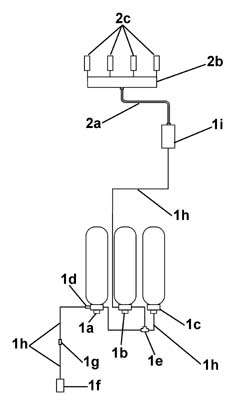

1042A06 C.N.G. - FUEL SYSTEM check for any leaks using electronic detector following operations
- Path
- Procedures > 10 ENGINE > 1042 (METHANE) CNG CANISTER AND PIPES > 1042A methane gas cannister and tubes for re-charging > 1042A06 C.N.G. - FUEL SYSTEM check for any leaks using electronic detector following operations
- Kind
- repair procedure (removal / refitting; the operation number is the code)
- Applies to
- all engines; all production periods; only with equipment: BIPOWER
- Interactive page
- https://sloeber94.github.io/elrnDB-fDbl/en/#/2584519
Applies to: all engines; all production periods; only with equipment: Cargo trim level and BIPOWER
After any maintenance or replacement operation which has involved adjusting the connectors or moving the pressurized components, a search for methane gas (CNG) leaks should be carried out proceeding as described below.
Road test the vehicle by driving for about 5-10 km in the methane operating mode.
Return the vehicle to the workshop and place it on a lift.
The test should take place in an ambient where there are no sudden variations in temperature.
Close the methane canister manual valves so that they are excluded from the circuit.
Connect the Examiner diagnostic equipment and enter the 'Parameters' environment to read the high pressure value.
Wait for 3 minutes and then take the pressure reading again. The final pressure value should not differ from the first value read (0 - 1 bar).
If the reading is different from the initial pressure value, continue the check for a further 3 minutes.
1. If the pressure continues to fall, use an electronic meter (GAS DETECTOR L.P.G. - CNG - GIGATRON or similar device) to search for gas leaks, testing each component and each individual pipe in the CNG system: cut-off solenoid on cylinder complete with manual cut-off valve (1a), (1b) and (1c), one-way valve (1d), three-way connector (1e), recharging filler complete with non-return valve and safety cap (1f), recharging pipe connecting sleeve (1g), steel pipes (1h), pressure reducer complete with pressure sensor and cut-off solenoid (1i).
Identify the section of the system where the leak is coming from using the electronic detector, then apply the leak-detecting foam to the components (BRC code 90AV99000052 or a similar product) in order to identify the exact point where the gas is escaping.
Repair the component involved, checking the cause of the leak (connectors not properly tightened, seals not replaced, defects in the part).
Repeat the procedure again to check for leaks until the problem is fully resolved.
2. With the circuit under pressure, check the circuit and the low-pressure pipes: flexible pipe (2a), methane fuel manifold (2b) and methane injectors (2c).
Identify the section of the system where the leak is coming from, using an electronic detector as described above, and take the appropriate corrective action (tighten connectors, replace seals or replace the part).
Repeat the procedure again to check for leaks until the problem is fully resolved.

Topics that link to this page (18)
- 1042A20 injection system solenoid on cylinder r r
- 1042A24 cng injection system one-way valve - r r
- 1042A34 cng cylinder recharge valve - r r
- 1042A40 cng recharge pipe from recharge valve to connection sleeve - r r
- 1042A44 cng recharge pipe connection sleeve - r r
- 1042A46 THREE-WAY CONNECTOR (one) for CNG repressurizing system' - R.R .
- 1042A48 cng recharge pipe from connection sleeve to solenoid - r r
- 1042A50 PIPE (one) connecting CNG repressurizing system' - R.R.
- 1042A70 Left CANISTER for CNG CANISTER ASSEMBLY - R.R.
- 1042A72 Centre CANISTER for CNG CANISTER ASSEMBLY - R.R.
- 1042A74 PIPE between FUEL TANK and fuel filler pipe - R.R.
- 1042A76 Right CANISTER for CNG CANISTER ASSEMBLY - R.R. with centre canister removed
- 1044E10 cng injection system pressure reduction unit - r r
- 1044E12 gas pressure control valve on gas circuit - replace
- 1044E15 SOLENOID VALVE COIL on CNG injection system' pressure reduction unit - R.R.
- 1058A44 cng pressure sensor - r r
- 1058A60 single cng manifold pipe complete with injectors - r r
- 1058A64 set of cng injection system injectors - r r with cng manifold pipe removed includes gasket replacement